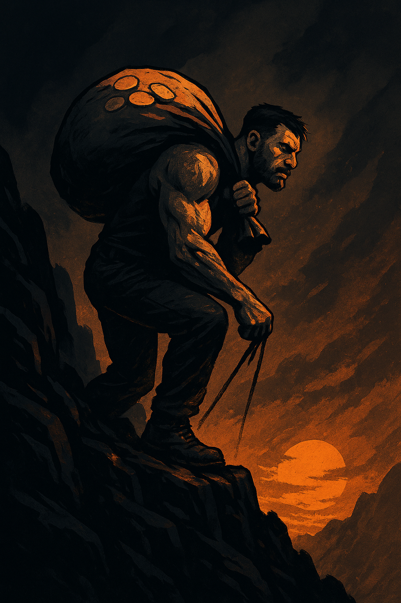

DO NEPOHODLÍ. PROTOŽE CHCI VĚDĚT, ZA CO SI VÁŽÍM KAŽDÉ KORUNY
Nechci peníze zadarmo. Nechci „vydělat snadno“. Nechci ani výhry, dary, podpory, štěstí. Chci růst. Chci dřít, potit se, selhávat a zvedat se. Protože když přijde odměna – ať už peníze, uznání, nebo prostě jen vnitřní klid – chci vědět, že si je zasloužím.
Chlap, který to má v sobě nastavené správně, ví, že pohodlí otupuje. A že právě nepohodlí je to, co z nás dělá chlapy. Ne šéfovské židle, ne luxusní auto, ne kreditka bez limitu. Ale to, že jsme si tím prošli. Že jsme měli hlad. Že jsme vstávali ve 3 ráno. Že jsme makali, i když se nám nechtělo.
Nepohodlí jako zrcadlo
Mnoho chlapů dneska žije ve falešném komfortu. Práce v kanceláři, výplata 15. na účtu, kafe z automatu, tepláková sobota na gauči. A pak se diví, že jim něco chybí. Chlap bez výzev zakrní. Zleniví tělo i hlava. A začne remcat.
Nepohodlí není trest. Je to zrcadlo. Ukaž mi chlapa, který si dobrovolně přivstal, šel do zimy, běhal s padesátikilovým pytlem po kopci… A já ti ukážu chlapa, který ví, kdo je. Který ví, že každá vydělaná koruna má váhu. Že když si koupí jídlo, nekupuje jen jídlo – ale energii, za kterou zaplatil potem a disciplínou.
Nepohodlí tě poskládá znovu
Být chlapsky „v pohodě“ není o tom, že se máš dobře. Je to o tom, že jsi vydržel to, co jiní vzdali. V nepohodlí se potkáváš sám se sebou – se svou disciplínou, výmluvami, strachem. A právě v těch chvílích se skládáš znova. Od nuly. Od základů.
Já jsem si to prošel. Období, kdy jsem neměl jistotu. Kdy jsem pořádně makal, spal málo a počítal každou stovku. Ale nikdy jsem si nepřál, aby to bylo jinak. Protože právě tehdy jsem pochopil: peníze nejsou problém. Problém je, když k nim nemáš vztah. Když jsi je nevypotil.
Když tě to nebolí, nerosteš
Přesně jako ve fitku. Můžeš si odškrtnout trénink, ale pokud jsi necítil pálení, nezatížil jsi tělo – nic se nestalo. Tak je to i s vývojem chlapa. Jestli ti není nepříjemně, nerosteš. Jestli tě to nestojí sílu, nezískáš žádnou.
Můžeš číst knihy, sledovat motivační videa, zapisovat si vize. Ale jestli sis nesáhl na dno… pořád nevíš, kdo jsi.
Peníze nejsou zlo. Nezasloužené peníze jsou.
Ve světě, kde všichni chtějí pasivní příjem a rychlé bohatství, zní tohle možná staromódně. Ale já říkám: peníze nejsou zlo. Zlo je, když je máš bez zásluh. Když ti spadnou do klína a ty k nim ztratíš úctu. Když si koupíš pátý telefon a zároveň v tobě hnije pocit, že jsi vlastně nic nepřekonal.
Chlap, který makal, ví, že peníze nejsou jen čísla. Jsou symbolem. Důkazem. Ztělesněním odolnosti. Když držíš v ruce hotovost, kterou jsi vydřel, vzpomeneš si na každý moment – jak jsi vstával, jak jsi makal, jak jsi jedl chleba nasucho. A to je hodnota, kterou ti nikdo nevezme.
Sebehodnota roste s námahou
Je to paradox. Čím těžší cesta, tím větší je v tobě klid. Čím méně jsi měl, tím víc si toho vážíš. Čím víc sis oddřel, tím víc stojíš nohama na zemi. Protože jsi to TY, kdo si tím prošel. A už nikdy nebudeš ten, co si jen stěžuje a hledá výmluvy.
Nepohodlí ti nedá výsledky hned. Ale dá ti víc. Dlouhodobou důstojnost.
Nepohodlí jako filtr
Spousta lidí chce výhody chlapa, který maká – ale nechtějí zaplatit tu cenu. Chtějí výdrž, respekt, peníze, uznání. Ale nechtějí hlad. Nechtějí být bez komfortu. Jenže právě to je ten filtr. Nepohodlí odfiltruje slabochy. Nechceš jít do zimy? Zůstaň doma. Nechceš makat rukama? Mluv o seberozvoji na Instagramu. Ale ti, kdo jdou ven, kdo makají, kdo mlčí a jdou dál – ti si zaslouží víc než lajky. Ti si zaslouží vlastní úctu.
Když máš málo, vnímáš víc
Když jsem měl málo, všechno mělo smysl. Káva chutnala líp. Cesta pěšky byla hlubší. Každá vydělaná stovka byla jako trofej. A nebyl jsem frustrovaný – byl jsem hrdý. Protože jsem věděl, že jsem to zvládl sám. Ale i k tomuto pocitu musí člověk dojít sám a dozrát jako chlap.
Dnes, když se mám líp, nezapomínám. Nechci žít ve falešném komfortu. Proto si občas vědomě přidám zátěž. Nepohodlí. Trénink. Studenou sprchu. Práci navíc. Uberu si vědomě z peněz. Ne proto, že musím. Ale protože nechci ztratit to, co mě postavilo a znovu zažít nekomfort. Abych věděl a ukotvil se v tom, čeho si zase mám vážit.
Nepohodlí je klíč. Ne zámek.
Nepohodlí tě neuzavírá. Otevírá tě. Ukazuje ti limity – a pak ti dává příležitost je překročit.
A právě v tom okamžiku – kdy jsi bez jistot, bez zázemí, jen ty a tvoje disciplína – v tom okamžiku vzniká nový chlap. Ne ten z plakátu. Ne ten z Insta. Ale ten, který se dívá do zrcadla a ví: tohle jsem já. Bez nátěrů. Bez výmluv.
Co s tím dál?
- Začni chodit pěšky, když můžeš jet autem.
- Zvedni se dřív, než ostatní.
- Utrácej jen to, co sis vydělal vlastní prací a pílí.
- Udělej něco navíc, i když se ti nechce.
- Po každé výplatě si vzpomeň, co jsi pro ni musel udělat.
A pak si tu výplatu nevychutnávej povrchně – ale hluboce. Ne za to, co sis koupil. Ale za to, co sis tím potvrdil.
Mimo trasu. Protože právě tam se buduje hodnota. Tohle není článek o tom, jak být bohatý. Je to článek o tom, jak být silný. A to jde jen tehdy, když jdeš mimo trasu. Když jsi ochotný se vzdát pohodlí, abys vybudoval a zpevnil svou páteř. Když si vážíš každé koruny, protože víš, co tě stála.
